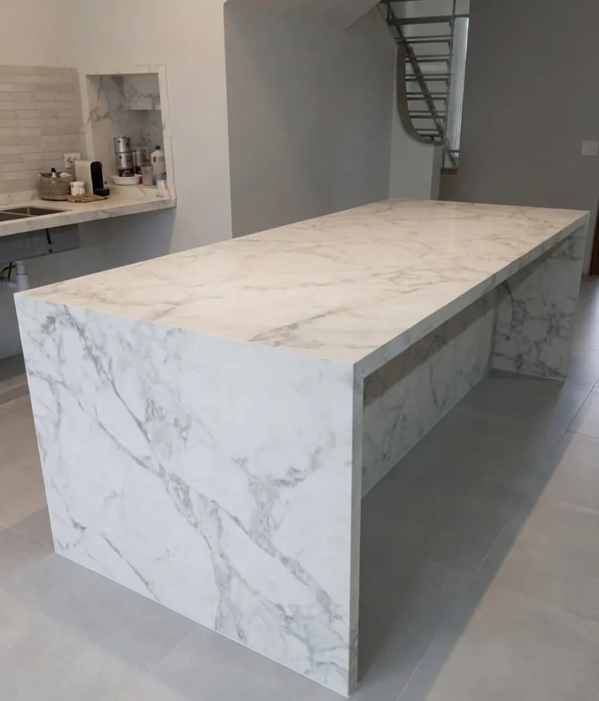
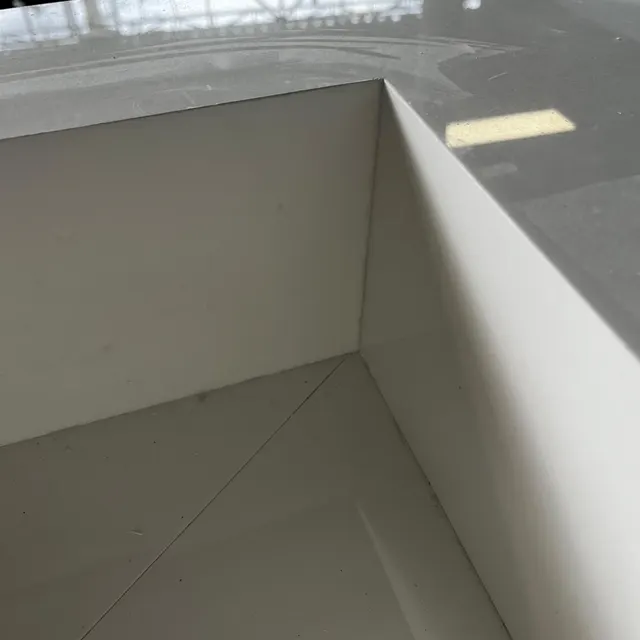
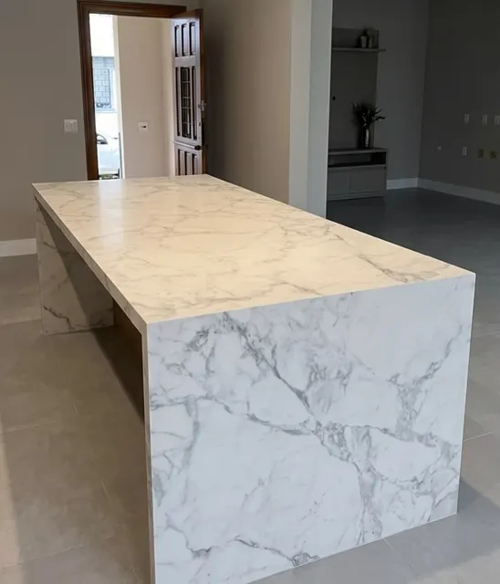
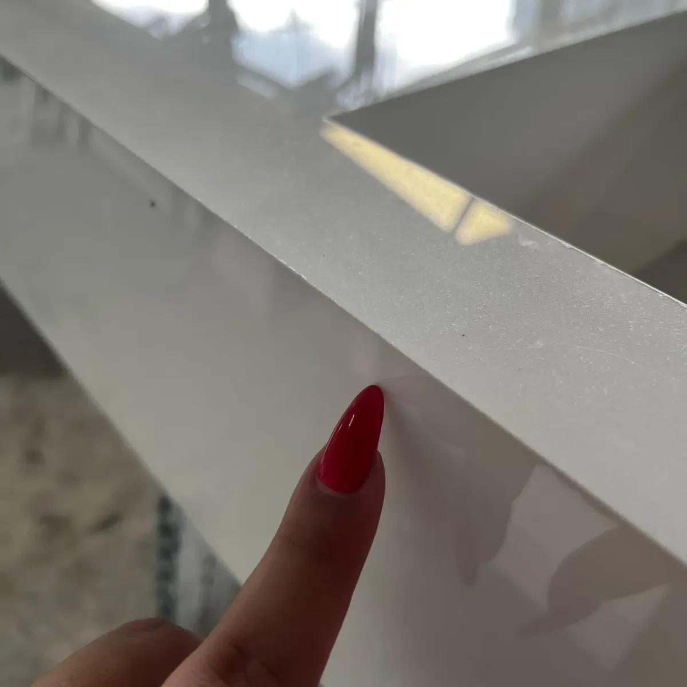
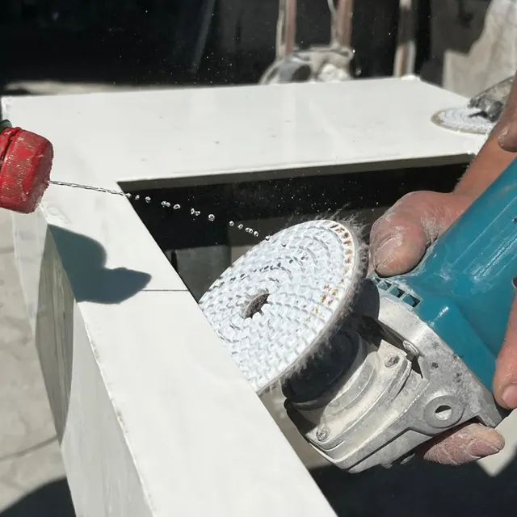
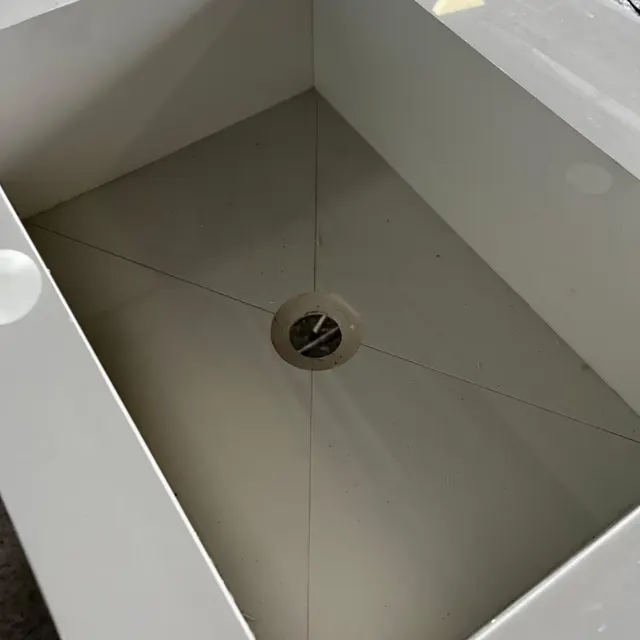

Marmoraria em São Paulo
Marmoraria de qualidade perto de você, com acabamento de alto padrão
Quartzo, granito, mármore e lâminas ultracompactas, medidos e instalados na sua casa.
- 20 dias úteis de prazo, e em muitos projetos entregamos antes
- Acabamento em 45° fino, nas emendas e nas quinas
- Grande SP e litoral norte com entrega e instalação

- Quartzo
- Lâminas ultracompactas
- Granitos
- Mármores
- Quartzitos
Do primeiro metro medido à instalação, em até 20 dias úteis
Quem mede a sua obra também acompanha a produção. Assim a pedra que chega na sua casa é a mesma que foi conferida, cortada e acabada aqui.
-
1
Medição na sua casa
Verificamos as medidas e o projeto exatos no local, antes de qualquer corte.
-
2
Conferência da pedra bruta
A qualidade do material é checada quando a chapa chega, ainda bruta.
-
3
Projeto passado a limpo
Tudo o que foi fechado com você vai para o desenho final da produção.
-
4
Serra, corte e acabamento
As peças são serradas e recebem o acabamento em 45° nas emendas.
-
5
Conferência final e instalação
O material é verificado de novo no fim da produção e segue para a sua obra.
Quartzo e lâminas ultracompactas, os materiais que a gente coloca na frente
Trabalhamos com todos os tipos de pedra, mas são esses dois que mais recomendamos para quem quer uma bancada de alto padrão que acompanhe o uso do dia a dia.
Lâminas ultracompactas
Quando a pergunta é "qual não mancha e aguenta panela quente?", é a lâmina que indicamos. É a mais indicada para manchas e alta temperatura.
Quartzo
Um dos nossos materiais de destaque para cozinhas, lavabos e cubas esculpidas, com o acabamento customizado que o seu projeto pedir.



A emenda em 45° é onde se vê o cuidado
Na meia-esquadria, as duas peças são cortadas em 45° e se encontram numa linha fina. Sem a borda grossa colada por cima, a bancada parece uma peça só.
É o acabamento que a gente faz nas quinas das bancadas, nas laterais das ilhas e por dentro das cubas esculpidas.

O corte
Dentro da cuba- As paredes
Como escolher a melhor pedra para o seu ambiente
São as três perguntas que mais ouvimos no atendimento. Escolha a sua e veja o que respondemos.
Lâmina ultracompacta
É o material mais indicado quando a preocupação é mancha e alta temperatura.
Mármore resinado
O mármore polido costuma manchar, sim. Já o resinado dificilmente mancha.
Granito
Entre os dois, para a cozinha, a nossa indicação é o granito.
Ficou em dúvida entre duas pedras? Na medição a gente olha o ambiente com você e ajuda a decidir.
Tirar dúvida no WhatsAppPeça o seu orçamento
Preencha e a sua mensagem chega pronta no nosso WhatsApp. A Verônika responde no horário de atendimento.
- Endereço
- Av. Marechal Tito, 7802, Itaim Paulista, São Paulo, SP, 08115-000
- Atendemos
- Toda a Grande São Paulo e o litoral norte
- Horário
- Segunda a quinta, 8h às 17h30
Sexta, 8h às 17h
Sábado fechado - (11) 96923-3519
Dúvidas que chegam no nosso WhatsApp
Qual material não mancha e aguenta melhor a temperatura?
As lâminas ultracompactas são as mais indicadas quando a preocupação é mancha e alta temperatura.
Mármore costuma manchar muito?
O mármore polido costuma manchar, sim. Já o mármore resinado dificilmente mancha.
Entre mármore e granito, qual escolher para a cozinha?
Para a cozinha, entre os dois, a nossa indicação é o granito.
Qual é o prazo de entrega?
O nosso prazo é de 20 dias úteis, e em muitos projetos conseguimos entregar antes disso.
Vocês fazem o projeto do jeito que eu imaginei?
Sim. O acabamento é customizado: normalmente o cliente traz uma inspiração e fazemos o máximo para entregar exatamente como foi pedido.
Com quais materiais vocês trabalham?
Granitos, mármores, quartzos, quartzitos e lâminas ultracompactas.
Quais regiões vocês atendem?
Ficamos no Itaim Paulista, Zona Leste de São Paulo, e entregamos em toda a Grande São Paulo e no litoral norte.
Qual o horário de atendimento?
Segunda a quinta, das 8h às 17h30. Sexta, das 8h às 17h. Aos sábados não abrimos.
Tem uma inspiração salva? Manda pra gente.
Envie a foto do que você imaginou e as medidas aproximadas. A gente responde com o próximo passo.
Enviar minha inspiração